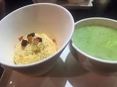
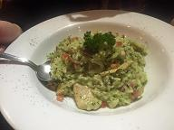
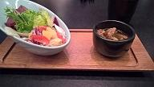
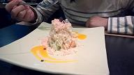
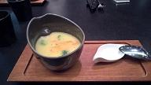
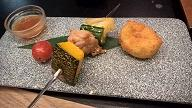
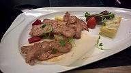
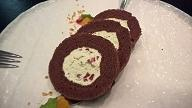
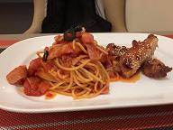
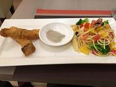

  在一個公園的旁邊，價格200~400之間，食物夠你吃飽，食物也好吃。記得別坐外圍的位子，那是吸煙區。 地址:新北市土城區員林街7號
在一條河的旁邊，價格200~400之間，要加服務費。用餐時間會有歌手在餐廳唱歌和演奏，裡面的擺飾很可愛。如果你的名字裡面有"萱"可以打折唷。 地址:高雄市楠梓區援中路528號
      板橋火車站走路可以到，價格500~700之間，配菜、點心、飲料會隨季節調整，前菜、點心變化多，好吃，燈光氣氛也不錯。 地址:台北市新北市板橋區文化路一段145號
食物好吃，但量太少，要買很多才能吃飽，不建議常吃。台南有很多店比他好吃。
 這是家由喜憨兒當店員、廚師的簡餐店，裡面當然也會有一般人當店員協助他們，他們家的食物還不錯吃，只是變化有點少，人多的時候，自助區很快就被吃光了，建議選非假日去吃喔。 地址:新北市土城區裕生路21巷6弄33號1樓